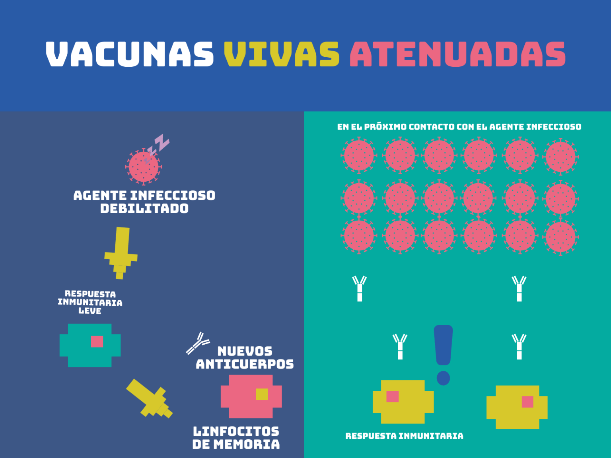

Vacunas Atenuadas
Una vacuna viva atenuada, como su nombre indica, es aquella que utiliza una forma atenuada o debilitada del agente infeccioso contra el que queremos generar inmunidad. Las vacunas vivas atenuadas tienen una ventaja principal: el sistema inmunitario entra en contacto con el agente infeccioso completo. Esto hace que el sistema inmunitario esté totalmente preparado para las próximas infecciones del agente infeccioso, pues ha podido identificar diferentes antígenos en él.
La desventaja principal de este tipo de vacunas es que, al tratarse de agentes infecciosos completos, es posible que logren infectar el organismo en el que se inoculan si este tiene un sistema inmunitario debilitado.
